Gene set testing for Illumina HumanMethylation Arrays
Evaluating the functionality and performance of GOregion
Jovana Maksimovic, Alicia Oshlack and Belinda Phipson
April 06, 2021
Last updated: 2021-04-06
Checks: 7 0
Knit directory: methyl-geneset-testing/
This reproducible R Markdown analysis was created with workflowr (version 1.6.2). The Checks tab describes the reproducibility checks that were applied when the results were created. The Past versions tab lists the development history.
Great! Since the R Markdown file has been committed to the Git repository, you know the exact version of the code that produced these results.
Great job! The global environment was empty. Objects defined in the global environment can affect the analysis in your R Markdown file in unknown ways. For reproduciblity it's best to always run the code in an empty environment.
The command set.seed(20200302) was run prior to running the code in the R Markdown file. Setting a seed ensures that any results that rely on randomness, e.g. subsampling or permutations, are reproducible.
Great job! Recording the operating system, R version, and package versions is critical for reproducibility.
Nice! There were no cached chunks for this analysis, so you can be confident that you successfully produced the results during this run.
Great job! Using relative paths to the files within your workflowr project makes it easier to run your code on other machines.
Great! You are using Git for version control. Tracking code development and connecting the code version to the results is critical for reproducibility.
The results in this page were generated with repository version ea1abcf. See the Past versions tab to see a history of the changes made to the R Markdown and HTML files.
Note that you need to be careful to ensure that all relevant files for the analysis have been committed to Git prior to generating the results (you can use wflow_publish or wflow_git_commit). workflowr only checks the R Markdown file, but you know if there are other scripts or data files that it depends on. Below is the status of the Git repository when the results were generated:
Ignored files:
Ignored: .DS_Store
Ignored: .Rhistory
Ignored: .Rproj.user/
Ignored: analysis/figures.nb.html
Ignored: code/.DS_Store
Ignored: code/.Rhistory
Ignored: code/.job/
Ignored: code/old/
Ignored: data/.DS_Store
Ignored: data/annotations/
Ignored: data/cache-intermediates/
Ignored: data/cache-region/
Ignored: data/cache-rnaseq/
Ignored: data/cache-runtime/
Ignored: data/datasets/.DS_Store
Ignored: data/datasets/GSE110554-data.RData
Ignored: data/datasets/GSE120854/
Ignored: data/datasets/GSE120854_RAW.tar
Ignored: data/datasets/GSE135446-data.RData
Ignored: data/datasets/GSE135446/
Ignored: data/datasets/GSE135446_RAW.tar
Ignored: data/datasets/GSE45459-data.RData
Ignored: data/datasets/GSE45459_Matrix_signal_intensities.txt
Ignored: data/datasets/GSE45460/
Ignored: data/datasets/GSE45460_RAW.tar
Ignored: data/datasets/GSE95460_RAW.tar
Ignored: data/datasets/GSE95460_RAW/
Ignored: data/datasets/GSE95462-data.RData
Ignored: data/datasets/GSE95462/
Ignored: data/datasets/GSE95462_RAW/
Ignored: data/datasets/SRP100803/
Ignored: data/datasets/SRP125125/.DS_Store
Ignored: data/datasets/SRP125125/SRR6298*/
Ignored: data/datasets/SRP125125/SRR_Acc_List.txt
Ignored: data/datasets/SRP125125/SRR_Acc_List_Full.txt
Ignored: data/datasets/SRP125125/SraRunTable.txt
Ignored: data/datasets/SRP125125/multiqc_data/
Ignored: data/datasets/SRP125125/multiqc_report.html
Ignored: data/datasets/SRP125125/quants/
Ignored: data/datasets/SRP166862/
Ignored: data/datasets/SRP217468/
Ignored: data/datasets/TCGA.BRCA.rds
Ignored: data/datasets/TCGA.KIRC.rds
Ignored: data/misc/
Ignored: output/.DS_Store
Ignored: output/FDR-analysis/
Ignored: output/compare-methods/
Ignored: output/figures/
Ignored: output/methylgsa-params/
Ignored: output/outputs.tar.gz
Ignored: output/random-cpg-sims/
Ignored: output/test/
Unstaged changes:
Modified: analysis/04_expressionGenesetsBcells.Rmd
Modified: analysis/05_compareMethods.Rmd
Note that any generated files, e.g. HTML, png, CSS, etc., are not included in this status report because it is ok for generated content to have uncommitted changes.
These are the previous versions of the repository in which changes were made to the R Markdown (analysis/07_regionAnalysisBcells.Rmd) and HTML (docs/07_regionAnalysisBcells.html) files. If you've configured a remote Git repository (see ?wflow_git_remote), click on the hyperlinks in the table below to view the files as they were in that past version.
| File | Version | Author | Date | Message |
|---|---|---|---|---|
| Rmd | ea1abcf | JovMaksimovic | 2021-04-06 | wflow_publish(c("analysis/07_regionAnalysisBcells.Rmd")) |
| html | a9a3a86 | JovMaksimovic | 2021-04-06 | Build site. |
| Rmd | 9843157 | JovMaksimovic | 2021-04-06 | wflow_publish(c("analysis/index.Rmd", "analysis/07_regionAnalysisBcells.Rmd", |
library(here)
library(ChAMP)
library(minfi)
library(paletteer)
library(limma)
library(BiocParallel)
library(reshape2)
library(DMRcate)
library(missMethyl)
library(ggplot2)
library(glue)
library(UpSetR)
library(dplyr)
library(patchwork)
library(tibble)
library(grid)
library(ggupset)
library(ggpubr)
library(TxDb.Hsapiens.UCSC.hg19.knownGene)
source(here("code/utility.R"))Load data
We are using publicly available EPIC data GSE45459 generated from developing human B-cells. The data is normalised and filtered (bad probes, multi-mapping probes, SNP probes, sex chromosomes).
# load data
dataFile <- here("data/datasets/GSE45459-data.RData")
if(file.exists(dataFile)){
# load processed data and sample information
load(dataFile)
} else {
raw <- read.delim(here("data/datasets/GSE45459_Matrix_signal_intensities.txt"),
row.names = "ID_REF")
M <- raw[,grepl("Methylated", colnames(raw))]
U <- raw[,grepl("Unmethylated", colnames(raw))]
detP <- raw[,grepl("Pval", colnames(raw))]
targets <- as.data.frame(strsplit2(colnames(detP),"_")[,1:2])
colnames(targets) <- c("ID","Stage")
mSet <- MethylSet(Meth = as.matrix(M), Unmeth = as.matrix(U),
annotation = c(array = "IlluminaHumanMethylation450k",
annotation = "ilmn12.hg19"))
colnames(mSet) <- targets$ID
grRaw <- minfi::mapToGenome(mSet)
#normalise
normGr <- preprocessQuantile(grRaw)
#filter
fltGr <- filterQual(normGr = normGr, detP = detP)
fltGr <- filterProbes(fltGr)
save(detP, normGr, fltGr, targets, file = dataFile)
}Statistical analysis
Compare several sets of sorted immune cells. Consider results significant at FDR < 0.05 and delta beta ~ 10% (~ lfc = 0.5).
mVals <- getM(fltGr)
bVals <- getBeta(fltGr)Stage <- factor(targets$Stage)
design <- model.matrix(~0+Stage)
fit <- lmFit(mVals, design)
cont.matrix <- makeContrasts(S1vS2=StageS1-StageS2,
S2vS3=StageS2-StageS3,
levels=design)
fit2 <- contrasts.fit(fit, cont.matrix)
fit2 <- eBayes(fit2, robust=TRUE, trend=TRUE)
tfit <- treat(fit2, lfc = 0.5)
pval <- 0.05
fitSum <- summary(decideTests(tfit, p.value = pval))
fitSum S1vS2 S2vS3
Down 1083 0
NotSig 366973 369336
Up 2065 785Find differentially methylated regions
Identify differentially methylated regions using the DMRcate package.
outDir <- here::here("data/cache-region")
if (!dir.exists(outDir)) dir.create(outDir)
outFile <- here("data/cache-region/dmrcate-GSE45459-results.rds")
if(!file.exists(outFile)){
dmrList <- vector("list", ncol(cont.matrix))
for(i in 1:ncol(cont.matrix)){
cpgAnn <- cpg.annotate("array", mVals, what = "M", arraytype = "450K",
analysis.type = "differential", design = design,
contrasts = TRUE, cont.matrix = cont.matrix,
coef = colnames(fitSum)[i])
dmrList[[i]] <- extractRanges(dmrcate(cpgAnn))
}
names(dmrList) <- colnames(cont.matrix)
saveRDS(dmrList, file = outFile)
} else {
dmrList <- readRDS(outFile)
}dat <- rownames_to_column(melt(sapply(dmrList, length)), var = "contrast")
dat$filtering = "before"
meanDiff <- 0
noCpgs <- 2
for(i in 1:length(dmrList)){
keep <- (abs(dmrList[[i]]$meandiff) > meanDiff & dmrList[[i]]$no.cpgs >=noCpgs)
dat <- bind_rows(dat, data.frame(contrast = names(dmrList)[i],
value = length(dmrList[[i]][keep, ]),
filtering = "after",
stringsAsFactors = FALSE))
}
p <- ggplot(dat, aes(x = contrast, y = value, fill = filtering)) +
geom_bar(stat = "identity", position = "dodge") +
labs(x = "Contrast", y = "No. DMRs", fill = "Filtering")
p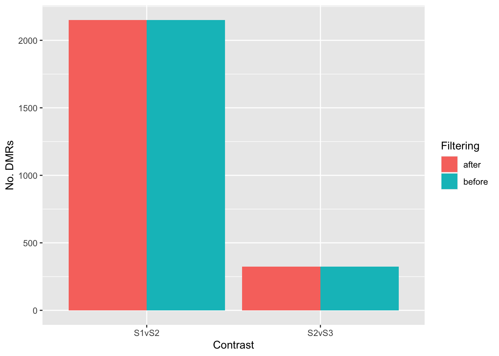
| Version | Author | Date |
|---|---|---|
| a9a3a86 | JovMaksimovic | 2021-04-06 |
Save figure for use in manuscript.
outDir <- here::here("output/figures")
if (!dir.exists(outDir)) dir.create(outDir)
fig <- here("output/figures/Fig-5B.rds")
saveRDS(p, fig, compress = FALSE)GO analysis of DMRs
Run GO analysis on the differentially methylated regions (DMRs) identified by DMRcate for each of the contrasts.
outFile <- here("data/cache-region/dmrcate-GSE45459-go.rds")
anno <- loadAnnotation(arrayType = "450k")
txdb <- TxDb.Hsapiens.UCSC.hg19.knownGene
hg19Genes <- GenomicFeatures::genes(txdb) 403 genes were dropped because they have exons located on both strands
of the same reference sequence or on more than one reference sequence,
so cannot be represented by a single genomic range.
Use 'single.strand.genes.only=FALSE' to get all the genes in a
GRangesList object, or use suppressMessages() to suppress this message.dmrGo <- NULL
if(!file.exists(outFile)){
for(i in 1:length(dmrList)){
keep <- (abs(dmrList[[i]]$meandiff) > meanDiff & dmrList[[i]]$no.cpgs >= noCpgs)
overlaps <- findOverlaps(hg19Genes, dmrList[[i]][keep, ],
minoverlap = 1)
sigGenes <- hg19Genes$gene_id[from(overlaps)]
tmp <- topGO(goana(sigGenes, universe = hg19Genes$gene_id),
number = Inf)
tmp <- rownames_to_column(tmp, var = "GO")[, c("GO", "P.DE")]
tmp$method <- "goana"
tmp$contrast <- colnames(cont.matrix)[i]
dmrGo <- bind_rows(dmrGo, tmp)
tmp <- topGSA(goregion(dmrList[[i]][keep, ], anno = anno,
prior.prob = FALSE, array.type = "450k"),
number = Inf)
tmp <- rownames_to_column(tmp, var = "GO")[, c("GO", "P.DE")]
tmp$method <- "goregion-hgt"
tmp$contrast <- colnames(cont.matrix)[i]
dmrGo <- bind_rows(dmrGo, tmp)
tmp <- topGSA(goregion(dmrList[[i]][keep, ], anno = anno,
array.type = "450k", plot.bias = FALSE),
number = Inf)
tmp <- rownames_to_column(tmp, var = "GO")[, c("GO", "P.DE")]
tmp$method <- "goregion-gometh"
tmp$contrast <- colnames(cont.matrix)[i]
dmrGo <- bind_rows(dmrGo, tmp)
tmp <- topGSA(gometh(rownames(topTreat(tfit, coef = i, num = 5000)),
anno = anno, array.type = "450k"), number = Inf)
tmp <- rownames_to_column(tmp, var = "GO")[, c("GO", "P.DE")]
tmp$method <- "gometh-probe-top"
tmp$contrast <- colnames(cont.matrix)[i]
dmrGo <- bind_rows(dmrGo, tmp)
tmp <- topGSA(gometh(rownames(topTreat(tfit, coef = i, num = Inf,
p.value = pval)), anno = anno,
array.type = "450k"), number = Inf)
tmp <- rownames_to_column(tmp, var = "GO")[, c("GO", "P.DE")]
tmp$method <- "gometh-probe-fdr"
tmp$contrast <- colnames(cont.matrix)[i]
dmrGo <- bind_rows(dmrGo, tmp)
}
saveRDS(dmrGo, file = outFile)
} else {
dmrGo <- readRDS(outFile)
}Probe bias in DMRs
bDat <- vector("list", length(dmrList))
cpgs <- GRanges(seqnames = anno$chr,
ranges = IRanges(start = anno$pos, end = anno$pos),
strand = anno$strand,
name = anno$Name)
for(i in 1:length(dmrList)){
keep <- (abs(dmrList[[i]]$meandiff) > meanDiff & dmrList[[i]]$no.cpgs >=noCpgs)
overlaps <- findOverlaps(cpgs, dmrList[[i]][keep, ])
dmrCpgs <- cpgs$name[from(overlaps)]
bDat[[i]] <- getBiasDat(dmrCpgs, array.type = "450k",
anno = anno)
}All input CpGs are used for testing.
All input CpGs are used for testing.p <- vector("list", length(bDat))
for(i in 1:length(p)){
p[[i]] <- ggplot(bDat[[i]], aes(x = avgbias, y = propDM)) +
geom_point(shape = 1, size = 2) +
geom_smooth() +
labs(x = "No. CpGs per gene (binned)",
y = "Prop. differential methylation") +
theme_minimal() +
theme(panel.grid = element_blank(),
axis.line = element_line(colour = "black"))
}
(p[[1]] + labs(title = names(dmrList)[1]) |
p[[2]] + labs(title = names(dmrList)[2]))`geom_smooth()` using method = 'loess' and formula 'y ~ x'
`geom_smooth()` using method = 'loess' and formula 'y ~ x'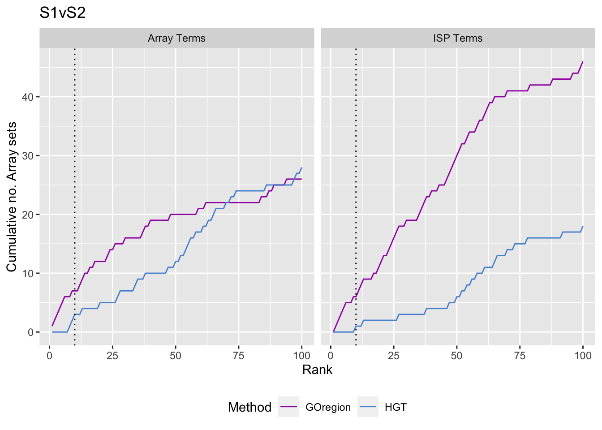
| Version | Author | Date |
|---|---|---|
| a9a3a86 | JovMaksimovic | 2021-04-06 |
Save figure for use in manuscript.
fig <- here("output/figures/SFig-11A.rds")
saveRDS(p[[1]], fig, compress = FALSE)
fig <- here("output/figures/SFig-12A.rds")
saveRDS(p[[2]], fig, compress = FALSE)Compare GOregion with other approaches
immuneGO <- unique(read.csv(here("data/genesets/GO-immune-system-process.txt"),
stringsAsFactors = FALSE, header = FALSE,
col.names = "GOID"))
rnaseqGO <- readRDS(here("data/cache-rnaseq/RNAseq-GSE45460-GO.rds"))
rnaseqGO %>% group_by(contrast) %>%
mutate(rank = 1:n()) %>%
dplyr::filter(rank <= 100) -> topGOSets
dmrGo %>% arrange(contrast, method, P.DE) %>%
dplyr::filter(method %in% c("goana", "goregion-gometh")) %>%
mutate(method = unname((dict[method]))) %>%
group_by(contrast, method) %>%
mutate(rank = 1:n()) %>%
dplyr::filter(rank <= 100) -> dat
p <- vector("list", length(unique(dat$contrast)))
for(i in 1:length(p)){
cont <- sort(unique(dat$contrast))[i]
dat %>% dplyr::filter(contrast == cont) %>%
arrange(method, P.DE) %>%
group_by(method) %>%
mutate(csum = cumsum(GO %in% immuneGO$GOID)) %>%
mutate(truth = "ISP Terms") -> immuneSum
dat %>% dplyr::filter(contrast == cont) %>%
arrange(method, P.DE) %>%
group_by(method) %>%
mutate(csum = cumsum(GO %in% topGOSets$ID[topGOSets$contrast %in%
contrast])) %>%
mutate(truth = "RNAseq Terms") -> rnaseqSum
truthSum <- bind_rows(immuneSum, rnaseqSum)
p[[i]] <- ggplot(truthSum, aes(x = rank, y = csum, colour = method)) +
geom_line() +
facet_wrap(vars(truth)) +
geom_vline(xintercept = 10, linetype = "dotted") +
labs(colour = "Method", x = "Rank",
y = glue("Cumulative no. RNAseq sets")) +
theme(legend.position = "bottom") +
scale_color_manual(values = methodCols) +
ggtitle(cont)
}
p[[1]]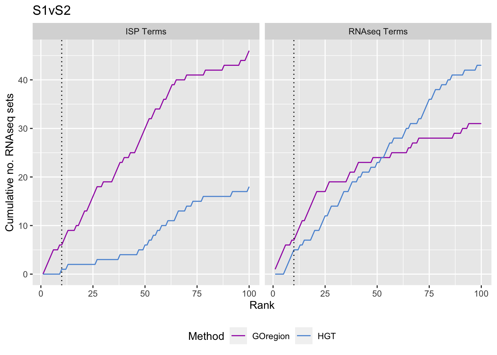
| Version | Author | Date |
|---|---|---|
| a9a3a86 | JovMaksimovic | 2021-04-06 |
p[[2]]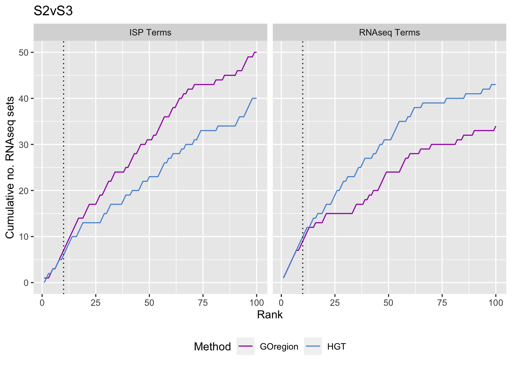
| Version | Author | Date |
|---|---|---|
| a9a3a86 | JovMaksimovic | 2021-04-06 |
Save figure for use in manuscript.
fig <- here("output/figures/Fig-5C.rds")
saveRDS(p[[1]], fig, compress = FALSE)
fig <- here("output/figures/SFig-11B.rds")
saveRDS(p[[2]], fig, compress = FALSE)Terms NOT in top 100 "truth" GO categories for Stage 2 versus Stage 3.
terms <- missMethyl:::.getGO()$idTable
dat %>% dplyr::filter(contrast == "S2vS3") %>%
arrange(method, P.DE) %>%
group_by(method) %>%
dplyr::filter(!(GO %in% topGOSets$ID[topGOSets$contrast %in% "S2vS3"])) %>%
inner_join(terms, by = c("GO" = "GOID")) %>% data.frame GO P.DE method contrast rank ONTOLOGY
1 GO:0042100 1.871886e-07 GOregion S2vS3 8 BP
2 GO:0051251 2.361494e-06 GOregion S2vS3 14 BP
3 GO:0030888 2.919664e-06 GOregion S2vS3 15 BP
4 GO:0046651 3.954230e-06 GOregion S2vS3 17 BP
5 GO:0032943 4.354933e-06 GOregion S2vS3 18 BP
6 GO:1903037 6.441511e-06 GOregion S2vS3 19 BP
7 GO:0002696 1.172146e-05 GOregion S2vS3 22 BP
8 GO:0070661 1.353316e-05 GOregion S2vS3 23 BP
9 GO:0050867 1.810620e-05 GOregion S2vS3 24 BP
10 GO:0007159 1.986455e-05 GOregion S2vS3 25 BP
11 GO:0030890 3.240636e-05 GOregion S2vS3 26 BP
12 GO:0050870 3.576705e-05 GOregion S2vS3 27 BP
13 GO:0001772 4.064320e-05 GOregion S2vS3 28 CC
14 GO:0050864 4.433351e-05 GOregion S2vS3 29 BP
15 GO:0002695 5.137454e-05 GOregion S2vS3 30 BP
16 GO:0050670 5.356112e-05 GOregion S2vS3 31 BP
17 GO:0032944 5.631251e-05 GOregion S2vS3 32 BP
18 GO:0050862 7.195065e-05 GOregion S2vS3 33 BP
19 GO:1903039 9.189073e-05 GOregion S2vS3 36 BP
20 GO:0070663 1.034611e-04 GOregion S2vS3 37 BP
21 GO:0022407 1.072928e-04 GOregion S2vS3 38 BP
22 GO:0071356 1.256294e-04 GOregion S2vS3 40 BP
23 GO:0045619 1.304243e-04 GOregion S2vS3 42 BP
24 GO:0002790 1.633360e-04 GOregion S2vS3 44 BP
25 GO:0045580 1.667860e-04 GOregion S2vS3 45 BP
26 GO:0022409 2.457559e-04 GOregion S2vS3 50 BP
27 GO:0034612 2.549419e-04 GOregion S2vS3 51 BP
28 GO:0031295 2.606491e-04 GOregion S2vS3 52 BP
29 GO:0050866 2.726386e-04 GOregion S2vS3 53 BP
30 GO:0050856 2.796375e-04 GOregion S2vS3 54 BP
31 GO:0031294 2.826779e-04 GOregion S2vS3 55 BP
32 GO:0023061 3.216904e-04 GOregion S2vS3 59 BP
33 GO:0050851 4.230004e-04 GOregion S2vS3 61 BP
34 GO:0008597 4.785944e-04 GOregion S2vS3 62 MF
35 GO:0002429 5.059610e-04 GOregion S2vS3 63 BP
36 GO:0002757 5.059610e-04 GOregion S2vS3 64 BP
37 GO:0050671 5.798341e-04 GOregion S2vS3 66 BP
38 GO:0032946 5.952831e-04 GOregion S2vS3 67 BP
39 GO:0050857 7.496028e-04 GOregion S2vS3 68 BP
40 GO:0032735 8.410294e-04 GOregion S2vS3 69 BP
41 GO:0050871 9.054775e-04 GOregion S2vS3 71 BP
42 GO:0002024 9.402317e-04 GOregion S2vS3 72 BP
43 GO:2000106 9.626609e-04 GOregion S2vS3 73 BP
44 GO:0070665 1.012407e-03 GOregion S2vS3 74 BP
45 GO:0051209 1.046106e-03 GOregion S2vS3 75 BP
46 GO:0051283 1.072826e-03 GOregion S2vS3 76 BP
47 GO:0051282 1.122256e-03 GOregion S2vS3 77 BP
48 GO:0043605 1.177601e-03 GOregion S2vS3 78 BP
49 GO:0019722 1.214673e-03 GOregion S2vS3 79 BP
50 GO:0051208 1.229678e-03 GOregion S2vS3 80 BP
51 GO:0051250 1.325522e-03 GOregion S2vS3 81 BP
52 GO:2000275 1.541309e-03 GOregion S2vS3 83 BP
53 GO:0060453 1.629881e-03 GOregion S2vS3 84 BP
54 GO:0090277 1.808017e-03 GOregion S2vS3 86 BP
55 GO:0038063 1.820508e-03 GOregion S2vS3 87 BP
56 GO:0051281 1.823752e-03 GOregion S2vS3 88 BP
57 GO:0002791 1.839700e-03 GOregion S2vS3 89 BP
58 GO:2000510 2.047714e-03 GOregion S2vS3 91 BP
59 GO:0031587 2.159552e-03 GOregion S2vS3 92 BP
60 GO:0051651 2.188118e-03 GOregion S2vS3 93 BP
61 GO:0002443 2.205549e-03 GOregion S2vS3 94 BP
62 GO:0002253 2.297889e-03 GOregion S2vS3 95 BP
63 GO:2001190 2.471676e-03 GOregion S2vS3 96 BP
64 GO:0015870 2.518229e-03 GOregion S2vS3 97 BP
65 GO:0061526 2.518229e-03 GOregion S2vS3 98 BP
66 GO:0002366 2.547678e-03 GOregion S2vS3 99 BP
67 GO:0042100 1.165126e-07 HGT S2vS3 13 BP
68 GO:0065008 2.489250e-07 HGT S2vS3 16 BP
69 GO:0030888 3.845382e-07 HGT S2vS3 18 BP
70 GO:0051251 4.312737e-07 HGT S2vS3 19 BP
71 GO:0032879 6.277272e-07 HGT S2vS3 22 BP
72 GO:0065007 6.299087e-07 HGT S2vS3 23 BP
73 GO:0050789 1.415538e-06 HGT S2vS3 27 BP
74 GO:1903037 2.546568e-06 HGT S2vS3 30 BP
75 GO:0002696 2.968925e-06 HGT S2vS3 32 BP
76 GO:0048519 3.509679e-06 HGT S2vS3 33 BP
77 GO:0001772 3.986710e-06 HGT S2vS3 34 CC
78 GO:0050794 4.488290e-06 HGT S2vS3 37 BP
79 GO:0022407 4.945817e-06 HGT S2vS3 40 BP
80 GO:0050867 4.985423e-06 HGT S2vS3 41 BP
81 GO:0030890 5.394265e-06 HGT S2vS3 42 BP
82 GO:0060341 5.505027e-06 HGT S2vS3 44 BP
83 GO:0050864 8.371982e-06 HGT S2vS3 47 BP
84 GO:0007159 9.019335e-06 HGT S2vS3 49 BP
85 GO:0046651 1.119393e-05 HGT S2vS3 50 BP
86 GO:0032943 1.257385e-05 HGT S2vS3 51 BP
87 GO:0050862 1.764620e-05 HGT S2vS3 56 BP
88 GO:0050870 1.862370e-05 HGT S2vS3 57 BP
89 GO:0007275 1.871765e-05 HGT S2vS3 58 BP
90 GO:0048522 2.000668e-05 HGT S2vS3 60 BP
91 GO:0031256 2.270777e-05 HGT S2vS3 63 CC
92 GO:0048523 2.364600e-05 HGT S2vS3 64 BP
93 GO:0002695 2.900358e-05 HGT S2vS3 65 BP
94 GO:0045619 3.042762e-05 HGT S2vS3 67 BP
95 GO:0002790 3.116909e-05 HGT S2vS3 68 BP
96 GO:0048856 3.301259e-05 HGT S2vS3 69 BP
97 GO:0070661 3.343787e-05 HGT S2vS3 70 BP
98 GO:0031295 3.394475e-05 HGT S2vS3 71 BP
99 GO:0019722 3.415117e-05 HGT S2vS3 72 BP
100 GO:0045580 3.928101e-05 HGT S2vS3 73 BP
101 GO:0031294 4.154762e-05 HGT S2vS3 74 BP
102 GO:1903039 4.191872e-05 HGT S2vS3 75 BP
103 GO:0022409 4.448138e-05 HGT S2vS3 76 BP
104 GO:0023061 4.525688e-05 HGT S2vS3 78 BP
105 GO:0051209 4.905469e-05 HGT S2vS3 79 BP
106 GO:0032589 5.045763e-05 HGT S2vS3 80 CC
107 GO:0051283 5.209781e-05 HGT S2vS3 81 BP
108 GO:0050851 5.320690e-05 HGT S2vS3 82 BP
109 GO:0048518 5.702087e-05 HGT S2vS3 83 BP
110 GO:0051282 5.865712e-05 HGT S2vS3 84 BP
111 GO:0032502 5.973700e-05 HGT S2vS3 85 BP
112 GO:0051208 6.977448e-05 HGT S2vS3 87 BP
113 GO:0005515 8.055737e-05 HGT S2vS3 88 MF
114 GO:0050866 8.087841e-05 HGT S2vS3 89 BP
115 GO:0048731 1.013109e-04 HGT S2vS3 90 BP
116 GO:0050856 1.052406e-04 HGT S2vS3 91 BP
117 GO:0050857 1.068240e-04 HGT S2vS3 92 BP
118 GO:0006109 1.073701e-04 HGT S2vS3 93 BP
119 GO:0050670 1.116954e-04 HGT S2vS3 95 BP
120 GO:0002429 1.174476e-04 HGT S2vS3 96 BP
121 GO:0002757 1.174476e-04 HGT S2vS3 97 BP
122 GO:0005829 1.183893e-04 HGT S2vS3 99 CC
123 GO:0032944 1.207893e-04 HGT S2vS3 100 BP
TERM
1 B cell proliferation
2 positive regulation of lymphocyte activation
3 regulation of B cell proliferation
4 lymphocyte proliferation
5 mononuclear cell proliferation
6 regulation of leukocyte cell-cell adhesion
7 positive regulation of leukocyte activation
8 leukocyte proliferation
9 positive regulation of cell activation
10 leukocyte cell-cell adhesion
11 positive regulation of B cell proliferation
12 positive regulation of T cell activation
13 immunological synapse
14 regulation of B cell activation
15 negative regulation of leukocyte activation
16 regulation of lymphocyte proliferation
17 regulation of mononuclear cell proliferation
18 positive regulation of T cell receptor signaling pathway
19 positive regulation of leukocyte cell-cell adhesion
20 regulation of leukocyte proliferation
21 regulation of cell-cell adhesion
22 cellular response to tumor necrosis factor
23 regulation of lymphocyte differentiation
24 peptide secretion
25 regulation of T cell differentiation
26 positive regulation of cell-cell adhesion
27 response to tumor necrosis factor
28 T cell costimulation
29 negative regulation of cell activation
30 regulation of T cell receptor signaling pathway
31 lymphocyte costimulation
32 signal release
33 antigen receptor-mediated signaling pathway
34 calcium-dependent protein serine/threonine phosphatase regulator activity
35 immune response-activating cell surface receptor signaling pathway
36 immune response-activating signal transduction
37 positive regulation of lymphocyte proliferation
38 positive regulation of mononuclear cell proliferation
39 positive regulation of antigen receptor-mediated signaling pathway
40 positive regulation of interleukin-12 production
41 positive regulation of B cell activation
42 diet induced thermogenesis
43 regulation of leukocyte apoptotic process
44 positive regulation of leukocyte proliferation
45 release of sequestered calcium ion into cytosol
46 negative regulation of sequestering of calcium ion
47 regulation of sequestering of calcium ion
48 cellular amide catabolic process
49 calcium-mediated signaling
50 sequestering of calcium ion
51 negative regulation of lymphocyte activation
52 regulation of oxidative phosphorylation uncoupler activity
53 regulation of gastric acid secretion
54 positive regulation of peptide hormone secretion
55 collagen-activated tyrosine kinase receptor signaling pathway
56 positive regulation of release of sequestered calcium ion into cytosol
57 regulation of peptide secretion
58 positive regulation of dendritic cell chemotaxis
59 positive regulation of inositol 1,4,5-trisphosphate-sensitive calcium-release channel activity
60 maintenance of location in cell
61 leukocyte mediated immunity
62 activation of immune response
63 positive regulation of T cell activation via T cell receptor contact with antigen bound to MHC molecule on antigen presenting cell
64 acetylcholine transport
65 acetylcholine secretion
66 leukocyte activation involved in immune response
67 B cell proliferation
68 regulation of biological quality
69 regulation of B cell proliferation
70 positive regulation of lymphocyte activation
71 regulation of localization
72 biological regulation
73 regulation of biological process
74 regulation of leukocyte cell-cell adhesion
75 positive regulation of leukocyte activation
76 negative regulation of biological process
77 immunological synapse
78 regulation of cellular process
79 regulation of cell-cell adhesion
80 positive regulation of cell activation
81 positive regulation of B cell proliferation
82 regulation of cellular localization
83 regulation of B cell activation
84 leukocyte cell-cell adhesion
85 lymphocyte proliferation
86 mononuclear cell proliferation
87 positive regulation of T cell receptor signaling pathway
88 positive regulation of T cell activation
89 multicellular organism development
90 positive regulation of cellular process
91 leading edge membrane
92 negative regulation of cellular process
93 negative regulation of leukocyte activation
94 regulation of lymphocyte differentiation
95 peptide secretion
96 anatomical structure development
97 leukocyte proliferation
98 T cell costimulation
99 calcium-mediated signaling
100 regulation of T cell differentiation
101 lymphocyte costimulation
102 positive regulation of leukocyte cell-cell adhesion
103 positive regulation of cell-cell adhesion
104 signal release
105 release of sequestered calcium ion into cytosol
106 neuron projection membrane
107 negative regulation of sequestering of calcium ion
108 antigen receptor-mediated signaling pathway
109 positive regulation of biological process
110 regulation of sequestering of calcium ion
111 developmental process
112 sequestering of calcium ion
113 protein binding
114 negative regulation of cell activation
115 system development
116 regulation of T cell receptor signaling pathway
117 positive regulation of antigen receptor-mediated signaling pathway
118 regulation of carbohydrate metabolic process
119 regulation of lymphocyte proliferation
120 immune response-activating cell surface receptor signaling pathway
121 immune response-activating signal transduction
122 cytosol
123 regulation of mononuclear cell proliferationTop 100 "truth" terms for Stage 2 versus Stage 3 - these look very broad.
topGOSets[topGOSets$contrast == "S2vS3",] %>% data.frame ID
1 GO:0005886
2 GO:0071944
3 GO:0002376
4 GO:0006955
5 GO:0051716
6 GO:0001775
7 GO:0048583
8 GO:0050896
9 GO:0005737
10 GO:0016020
11 GO:0045321
12 GO:0070887
13 GO:0002252
14 GO:0023052
15 GO:0071310
16 GO:0007154
17 GO:0007165
18 GO:0050853
19 GO:0012505
20 GO:0007166
21 GO:0050865
22 GO:0046649
23 GO:0010033
24 GO:0009607
25 GO:0002682
26 GO:0002694
27 GO:0002521
28 GO:0019899
29 GO:0051707
30 GO:0043207
31 GO:0002250
32 GO:0023051
33 GO:0009605
34 GO:0098542
35 GO:0050790
36 GO:0006952
37 GO:0051249
38 GO:0022610
39 GO:0006950
40 GO:0065009
41 GO:0007155
42 GO:0010646
43 GO:0035556
44 GO:0048584
45 GO:0030098
46 GO:0033993
47 GO:0009986
48 GO:0016192
49 GO:0046903
50 GO:0050776
51 GO:0006915
52 GO:0016477
53 GO:0042221
54 GO:0008219
55 GO:0140352
56 GO:0043168
57 GO:0051179
58 GO:0030155
59 GO:0042110
60 GO:0009966
61 GO:0042113
62 GO:0006810
63 GO:0098552
64 GO:0098805
65 GO:0032940
66 GO:0051234
67 GO:0002768
68 GO:0048534
69 GO:0012501
70 GO:0051336
71 GO:0002520
72 GO:0034097
73 GO:0002764
74 GO:0006928
75 GO:0030217
76 GO:0050863
77 GO:0045087
78 GO:1903034
79 GO:0005543
80 GO:0009611
81 GO:0043067
82 GO:0031982
83 GO:0002684
84 GO:0030097
85 GO:0002274
86 GO:0050778
87 GO:0040011
88 GO:0048870
89 GO:0051674
90 GO:0008289
91 GO:0005794
92 GO:0050854
93 GO:0010941
94 GO:0110165
95 GO:0042060
96 GO:0045785
97 GO:0051239
98 GO:0005575
99 GO:0035091
100 GO:0001932
Term Ont
1 plasma membrane CC
2 cell periphery CC
3 immune system process BP
4 immune response BP
5 cellular response to stimulus BP
6 cell activation BP
7 regulation of response to stimulus BP
8 response to stimulus BP
9 cytoplasm CC
10 membrane CC
11 leukocyte activation BP
12 cellular response to chemical stimulus BP
13 immune effector process BP
14 signaling BP
15 cellular response to organic substance BP
16 cell communication BP
17 signal transduction BP
18 B cell receptor signaling pathway BP
19 endomembrane system CC
20 cell surface receptor signaling pathway BP
21 regulation of cell activation BP
22 lymphocyte activation BP
23 response to organic substance BP
24 response to biotic stimulus BP
25 regulation of immune system process BP
26 regulation of leukocyte activation BP
27 leukocyte differentiation BP
28 enzyme binding MF
29 response to other organism BP
30 response to external biotic stimulus BP
31 adaptive immune response BP
32 regulation of signaling BP
33 response to external stimulus BP
34 defense response to other organism BP
35 regulation of catalytic activity BP
36 defense response BP
37 regulation of lymphocyte activation BP
38 biological adhesion BP
39 response to stress BP
40 regulation of molecular function BP
41 cell adhesion BP
42 regulation of cell communication BP
43 intracellular signal transduction BP
44 positive regulation of response to stimulus BP
45 lymphocyte differentiation BP
46 response to lipid BP
47 cell surface CC
48 vesicle-mediated transport BP
49 secretion BP
50 regulation of immune response BP
51 apoptotic process BP
52 cell migration BP
53 response to chemical BP
54 cell death BP
55 export from cell BP
56 anion binding MF
57 localization BP
58 regulation of cell adhesion BP
59 T cell activation BP
60 regulation of signal transduction BP
61 B cell activation BP
62 transport BP
63 side of membrane CC
64 whole membrane CC
65 secretion by cell BP
66 establishment of localization BP
67 immune response-regulating cell surface receptor signaling pathway BP
68 hematopoietic or lymphoid organ development BP
69 programmed cell death BP
70 regulation of hydrolase activity BP
71 immune system development BP
72 response to cytokine BP
73 immune response-regulating signaling pathway BP
74 movement of cell or subcellular component BP
75 T cell differentiation BP
76 regulation of T cell activation BP
77 innate immune response BP
78 regulation of response to wounding BP
79 phospholipid binding MF
80 response to wounding BP
81 regulation of programmed cell death BP
82 vesicle CC
83 positive regulation of immune system process BP
84 hemopoiesis BP
85 myeloid leukocyte activation BP
86 positive regulation of immune response BP
87 locomotion BP
88 cell motility BP
89 localization of cell BP
90 lipid binding MF
91 Golgi apparatus CC
92 regulation of antigen receptor-mediated signaling pathway BP
93 regulation of cell death BP
94 cellular anatomical entity CC
95 wound healing BP
96 positive regulation of cell adhesion BP
97 regulation of multicellular organismal process BP
98 cellular_component CC
99 phosphatidylinositol binding MF
100 regulation of protein phosphorylation BP
N DE P.DE FDR contrast rank
1 4953 332 1.795893e-20 4.047404e-16 S2vS3 1
2 5055 334 1.433078e-19 1.614864e-15 S2vS3 2
3 2750 213 7.033036e-19 5.283451e-15 S2vS3 3
4 1837 159 3.420205e-18 1.927029e-14 S2vS3 4
5 6912 414 1.528796e-17 6.890893e-14 S2vS3 5
6 1320 125 2.969794e-17 1.115504e-13 S2vS3 6
7 3935 270 3.897365e-17 1.254785e-13 S2vS3 7
8 8272 471 1.169129e-16 3.293584e-13 S2vS3 8
9 10568 565 4.478514e-16 1.121470e-12 S2vS3 9
10 8379 473 5.672035e-16 1.278307e-12 S2vS3 10
11 1168 112 7.166047e-16 1.468193e-12 S2vS3 11
12 3095 222 8.297393e-16 1.558320e-12 S2vS3 12
13 1112 108 1.059416e-15 1.836619e-12 S2vS3 13
14 6052 367 1.428695e-15 2.299893e-12 S2vS3 14
15 2550 190 5.868897e-15 8.817823e-12 S2vS3 15
16 6072 365 7.900451e-15 1.112828e-11 S2vS3 16
17 5571 339 3.403649e-14 4.512238e-11 S2vS3 17
18 61 21 4.063621e-14 5.087879e-11 S2vS3 18
19 4186 271 6.372785e-14 7.559130e-11 S2vS3 19
20 2845 202 8.252831e-14 9.299703e-11 S2vS3 20
21 545 65 9.776876e-14 1.049245e-10 S2vS3 21
22 647 72 1.436143e-13 1.471198e-10 S2vS3 22
23 3130 216 1.537215e-13 1.506271e-10 S2vS3 23
24 1351 117 2.110087e-13 1.981459e-10 S2vS3 24
25 1403 120 2.339648e-13 2.109145e-10 S2vS3 25
26 505 61 3.336694e-13 2.892272e-10 S2vS3 26
27 510 61 5.155813e-13 4.303576e-10 S2vS3 27
28 2123 160 6.269131e-13 5.045979e-10 S2vS3 28
29 1317 113 1.072229e-12 8.332700e-10 S2vS3 29
30 1319 113 1.183864e-12 8.893579e-10 S2vS3 30
31 388 51 1.269515e-12 9.229374e-10 S2vS3 31
32 3407 226 2.121755e-12 1.494312e-09 S2vS3 32
33 2588 183 2.765554e-12 1.888705e-09 S2vS3 33
34 996 92 3.208860e-12 2.127002e-09 S2vS3 34
35 2199 161 5.582140e-12 3.594419e-09 S2vS3 35
36 1525 123 6.461705e-12 4.045207e-09 S2vS3 36
37 421 52 8.481605e-12 5.166215e-09 S2vS3 37
38 1381 114 1.020484e-11 6.052274e-09 S2vS3 38
39 3701 238 1.097718e-11 6.343401e-09 S2vS3 39
40 2822 193 1.191926e-11 6.715611e-09 S2vS3 40
41 1374 113 1.613942e-11 8.871566e-09 S2vS3 41
42 3370 220 2.357471e-11 1.265008e-08 S2vS3 42
43 2641 182 3.028834e-11 1.587461e-08 S2vS3 43
44 2165 156 4.492621e-11 2.301141e-08 S2vS3 44
45 348 45 4.801728e-11 2.404812e-08 S2vS3 45
46 865 80 8.960797e-11 4.390206e-08 S2vS3 46
47 782 74 1.700350e-10 8.066675e-08 S2vS3 47
48 1909 140 1.718065e-10 8.066675e-08 S2vS3 48
49 1466 115 1.964490e-10 9.035449e-08 S2vS3 49
50 836 77 2.519324e-10 1.135560e-07 S2vS3 50
51 1799 133 3.213711e-10 1.420145e-07 S2vS3 51
52 1448 113 3.949766e-10 1.711844e-07 S2vS3 52
53 4308 261 4.221859e-10 1.795246e-07 S2vS3 53
54 2065 147 4.485295e-10 1.871946e-07 S2vS3 54
55 1385 109 5.232796e-10 2.144209e-07 S2vS3 55
56 2638 177 5.419505e-10 2.147408e-07 S2vS3 56
57 6212 350 5.431170e-10 2.147408e-07 S2vS3 57
58 695 67 6.055320e-10 2.352909e-07 S2vS3 58
59 446 50 6.842476e-10 2.613710e-07 S2vS3 59
60 2978 194 7.176083e-10 2.695456e-07 S2vS3 60
61 238 34 8.407218e-10 3.106122e-07 S2vS3 61
62 4715 279 9.067048e-10 3.286608e-07 S2vS3 62
63 507 54 9.187395e-10 3.286608e-07 S2vS3 63
64 1597 120 1.059567e-09 3.731166e-07 S2vS3 64
65 1338 105 1.335210e-09 4.629481e-07 S2vS3 65
66 4839 284 1.394085e-09 4.719711e-07 S2vS3 66
67 372 44 1.403118e-09 4.719711e-07 S2vS3 67
68 918 80 1.504443e-09 4.986121e-07 S2vS3 68
69 1935 138 1.549339e-09 5.060500e-07 S2vS3 69
70 1187 96 1.601824e-09 5.157185e-07 S2vS3 70
71 969 83 1.639218e-09 5.203247e-07 S2vS3 71
72 1120 92 1.677739e-09 5.251555e-07 S2vS3 72
73 375 44 1.805274e-09 5.573350e-07 S2vS3 73
74 2055 144 2.062569e-09 6.281638e-07 S2vS3 74
75 247 34 2.254293e-09 6.774001e-07 S2vS3 75
76 312 39 2.548908e-09 7.558517e-07 S2vS3 76
77 800 72 2.717326e-09 7.953295e-07 S2vS3 77
78 167 27 3.056853e-09 8.832345e-07 S2vS3 78
79 427 47 4.070664e-09 1.161273e-06 S2vS3 79
80 605 59 4.391898e-09 1.237253e-06 S2vS3 80
81 1441 109 4.865845e-09 1.353846e-06 S2vS3 81
82 3672 225 5.006167e-09 1.361665e-06 S2vS3 82
83 926 79 5.014786e-09 1.361665e-06 S2vS3 83
84 877 76 5.099015e-09 1.368053e-06 S2vS3 84
85 624 60 5.493161e-09 1.456463e-06 S2vS3 85
86 609 59 5.607710e-09 1.459438e-06 S2vS3 86
87 1789 128 5.679343e-09 1.459438e-06 S2vS3 87
88 1607 118 5.763410e-09 1.459438e-06 S2vS3 88
89 1607 118 5.763410e-09 1.459438e-06 S2vS3 89
90 720 66 6.295686e-09 1.576510e-06 S2vS3 90
91 1468 110 6.881440e-09 1.697261e-06 S2vS3 91
92 63 16 6.928520e-09 1.697261e-06 S2vS3 92
93 1559 115 7.203634e-09 1.736009e-06 S2vS3 93
94 16443 756 7.300624e-09 1.736009e-06 S2vS3 94
95 493 51 7.317784e-09 1.736009e-06 S2vS3 95
96 407 45 7.627266e-09 1.790580e-06 S2vS3 96
97 3126 197 7.806555e-09 1.813777e-06 S2vS3 97
98 16606 761 8.517103e-09 1.958673e-06 S2vS3 98
99 248 33 9.162603e-09 2.085834e-06 S2vS3 99
100 1387 105 9.315912e-09 2.097525e-06 S2vS3 100Examine what the top 10 ranked gene sets are and how many genes they contain, for each method and comparison.
nGenes <- rownames_to_column(data.frame(n = sapply(missMethyl:::.getGO()$idList,
length)),
var = "ID")
dat %>% arrange(contrast, method, P.DE) %>%
group_by(contrast, method) %>%
mutate(FDR = p.adjust(P.DE, method = "BH")) %>%
dplyr::filter(rank <= 10) %>%
inner_join(terms, by = c("GO" = "GOID")) %>%
inner_join(nGenes, by = c("GO" = "ID")) -> subp <- vector("list", length(unique(sub$contrast)))
truthPal <- scales::hue_pal()(4)
names(truthPal) <- c("Both", "ISP", "Neither", "RNAseq")
for(i in 1:length(p)){
cont <- sort(unique(sub$contrast))[i]
sub %>% dplyr::filter(contrast == cont) %>%
arrange(method, -rank) %>%
ungroup() %>%
mutate(idx = as.factor(1:n())) -> tmp
setLabs <- substr(tmp$TERM, 1, 40)
names(setLabs) <- tmp$idx
tmp %>% mutate(rna = GO %in% topGOSets$ID[topGOSets$contrast %in% cont],
isp = GO %in% immuneGO$GOID,
both = rna + isp,
col = ifelse(both == 2, "Both",
ifelse(both == 1 & rna == 1, "RNAseq",
ifelse(both == 1 & isp == 1,
"ISP", "Neither")))) %>%
mutate(col = factor(col,
levels = c("Both", "ISP", "RNAseq",
"Neither"))) -> tmp
p[[i]] <- ggplot(tmp, aes(x = -log10(FDR), y = idx, colour = col)) +
geom_point(aes(size = n), alpha = 0.7) +
scale_size(limits = c(min(sub$n), max(sub$n))) +
facet_wrap(vars(method), ncol = 2, scales = "free") +
scale_y_discrete(labels = setLabs) +
scale_colour_manual(values = truthPal) +
labs(y = "", size = "No. genes", colour = "In truth set") +
theme(axis.text = element_text(size = 8),
legend.box = "vertical",
legend.position = "bottom",
legend.margin = margin(0, 0, 0, 0, unit = "lines"),
panel.spacing.x = unit(1, "lines")) +
coord_cartesian(xlim = c(-log10(0.99), -log10(10^-80))) +
geom_vline(xintercept = -log10(0.05), linetype = "dashed") +
ggtitle(cont)
}
shift_legend(p[[1]], plot = TRUE, pos = "left")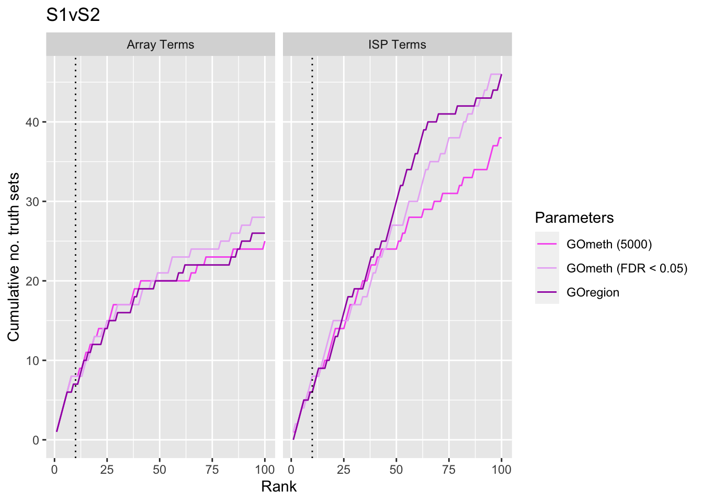
| Version | Author | Date |
|---|---|---|
| a9a3a86 | JovMaksimovic | 2021-04-06 |
shift_legend(p[[2]], plot = TRUE, pos = "left")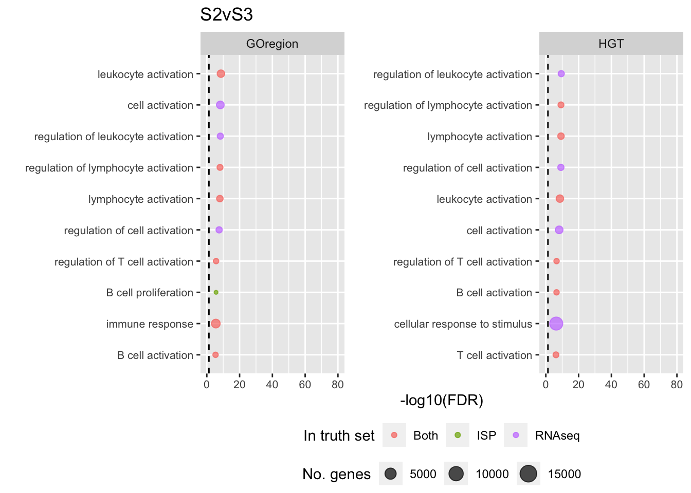
| Version | Author | Date |
|---|---|---|
| a9a3a86 | JovMaksimovic | 2021-04-06 |
Save figure for use in manuscript.
fig <- here("output/figures/Fig-5D.rds")
saveRDS(p[[1]], fig, compress = FALSE)
fig <- here("output/figures/SFig-11C.rds")
saveRDS(p[[2]], fig, compress = FALSE)Compare GOregion with probe-wise analysis
dmrGo %>% dplyr::filter(method %in% c("goregion-gometh", "gometh-probe-top",
"gometh-probe-fdr")) %>%
mutate(method = unname((dict[method]))) %>%
arrange(contrast, method, P.DE) %>%
group_by(contrast, method) %>%
mutate(csum = cumsum(GO %in% immuneGO$GOID)) %>%
mutate(rank = 1:n()) %>%
dplyr::filter(rank <= 100) -> sub
p1 <- ggplot(sub, aes(x = rank, y = csum, colour = method)) +
geom_line() +
facet_wrap(vars(contrast), ncol=3) +
geom_vline(xintercept = 10, linetype = "dotted") +
labs(colour = "Method", x = "Rank", y = "Cumulative no. immune sets") +
theme(legend.position = "bottom") +
scale_color_manual(values = methodCols)dmrGo %>% dplyr::filter(method %in% c("goregion-gometh", "gometh-probe-top",
"gometh-probe-fdr")) %>%
mutate(method = unname((dict[method]))) %>%
arrange(contrast, method, P.DE) %>%
group_by(contrast, method) %>%
mutate(csum = cumsum(GO %in% topGOSets$ID[topGOSets$contrast %in%
contrast])) %>%
mutate(rank = 1:n()) %>%
dplyr::filter(rank <= 100) -> sub
p2 <- ggplot(sub, aes(x = rank, y = csum, colour = method)) +
geom_line() +
facet_wrap(vars(contrast), ncol=3, scales = "free_y") +
geom_vline(xintercept = 10, linetype = "dotted") +
labs(colour = "Method", x = "Rank", y = "Cumulative no. RNAseq sets") +
theme(legend.position = "bottom") +
scale_color_manual(values = methodCols)
p3 <- p1 / p2 +
plot_layout(guides = "collect") &
theme(legend.position = "bottom")
p3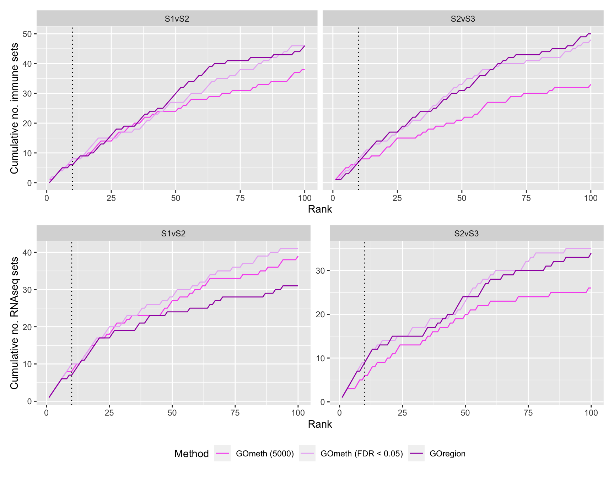
| Version | Author | Date |
|---|---|---|
| a9a3a86 | JovMaksimovic | 2021-04-06 |
Save figure for use in manuscript.
fig <- here("output/figures/SFig-13A.rds")
saveRDS(p1, fig, compress = FALSE)
fig <- here("output/figures/SFig-13B.rds")
saveRDS(p2, fig, compress = FALSE)Examine what the top 10 ranked gene sets are and how many genes they contain, for each method and comparison.
terms <- missMethyl:::.getGO()$idTable
nGenes <- rownames_to_column(data.frame(n = sapply(missMethyl:::.getGO()$idList,
length)),
var = "ID")
dmrGo %>% dplyr::filter(method %in% c("goregion-gometh", "gometh-probe-top",
"gometh-probe-fdr")) %>%
mutate(method = unname((dict[method]))) %>%
arrange(contrast, method, P.DE) %>%
group_by(contrast, method) %>%
mutate(FDR = p.adjust(P.DE, method = "BH")) %>%
mutate(rank = 1:n()) %>%
dplyr::filter(rank <= 10) %>%
inner_join(terms, by = c("GO" = "GOID")) %>%
inner_join(nGenes, by = c("GO" = "ID")) -> subp <- vector("list", length(unique(sub$contrast)))
for(i in 1:length(p)){
cont <- sort(unique(sub$contrast))[i]
sub %>% dplyr::filter(contrast == cont) %>%
arrange(method, -rank) %>%
ungroup() %>%
mutate(idx = as.factor(1:n())) -> tmp
setLabs <- substr(tmp$TERM, 1, 40)
names(setLabs) <- tmp$idx
tmp %>% mutate(rna = GO %in% topGOSets$ID[topGOSets$contrast %in% cont],
isp = GO %in% immuneGO$GOID,
both = rna + isp,
col = ifelse(both == 2, "Both",
ifelse(both == 1 & rna == 1, "RNAseq",
ifelse(both == 1 & isp == 1,
"ISP", "Neither")))) %>%
mutate(col = factor(col,
levels = c("Both", "ISP", "RNAseq",
"Neither"))) -> tmp
p[[i]] <- ggplot(tmp, aes(x = -log10(FDR), y = idx, colour = col)) +
geom_point(aes(size = n), alpha = 0.7) +
scale_size(limits = c(min(sub$n), max(sub$n))) +
facet_wrap(vars(method), ncol = 2, scales = "free") +
scale_y_discrete(labels = setLabs) +
scale_color_manual(values = truthPal) +
labs(y = "", size = "No. genes", colour = "In truth set") +
theme(axis.text = element_text(size = 7),
legend.margin = margin(0, 0, 0, 0, unit = "lines"),
legend.box = "horizontal",
panel.spacing.x = unit(1, "lines")) +
coord_cartesian(xlim = c(-log10(0.99), -log10(10^-80))) +
geom_vline(xintercept = -log10(0.05), linetype = "dashed") +
ggtitle(cont)
}
shift_legend(p[[1]], plot = TRUE, pos = "left")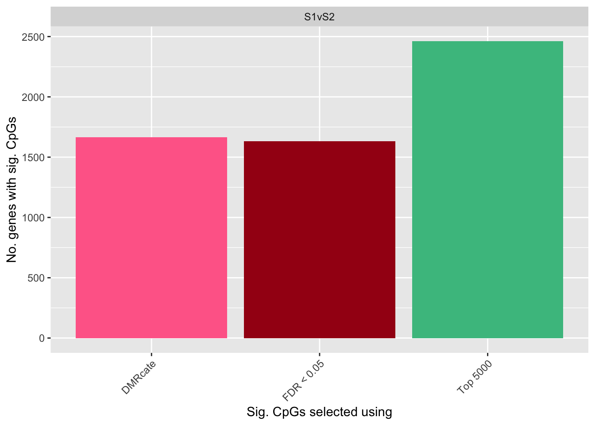
| Version | Author | Date |
|---|---|---|
| a9a3a86 | JovMaksimovic | 2021-04-06 |
shift_legend(p[[2]], plot = TRUE, pos = "left")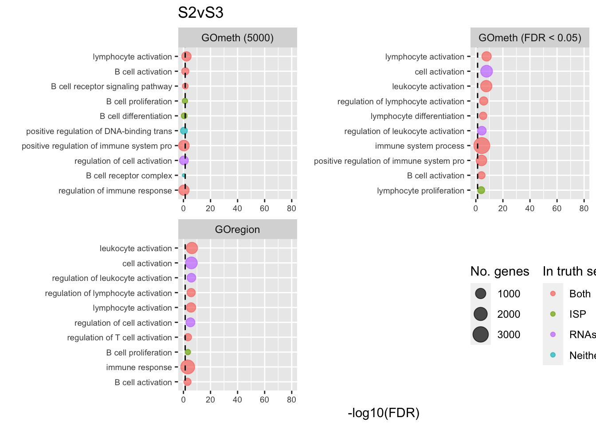
| Version | Author | Date |
|---|---|---|
| a9a3a86 | JovMaksimovic | 2021-04-06 |
Save figure for use in manuscript.
fig <- here("output/figures/SFig-13C.rds")
saveRDS(shift_legend(p[[1]] + theme(plot.title = element_blank()),
pos = "left"),
fig, compress = FALSE)
fig <- here("output/figures/SFig-13D.rds")
saveRDS(shift_legend(p[[2]] + theme(plot.title = element_blank()),
pos = "left"),
fig, compress = FALSE)Compare characteristics of region-wise and probe-wise results
cpgs <- GRanges(seqnames = anno$chr,
ranges = IRanges(start = anno$pos,
end = anno$pos),
strand = anno$strand,
name = anno$Name)
dat <- NULL
for(i in 1:ncol(cont.matrix)){
keep <- (abs(dmrList[[i]]$meandiff) > meanDiff & dmrList[[i]]$no.cpgs >= noCpgs)
overlaps <- findOverlaps(cpgs, dmrList[[i]][keep,])
tmp <- data.frame(cpgs = cpgs$name[from(overlaps)],
method = "DMRcate",
contrast = colnames(cont.matrix)[i],
stringsAsFactors = FALSE)
dat <- bind_rows(dat, tmp)
tmp <- data.frame(cpgs = rownames(topTreat(tfit, coef = i, num = 5000)),
method = "Top 5000",
contrast = colnames(cont.matrix)[i],
stringsAsFactors = FALSE)
dat <- bind_rows(dat, tmp)
tmp <- data.frame(cpgs = rownames(topTreat(tfit, coef = i, num = Inf,
p.value = pval)),
method = "FDR < 0.05",
contrast = colnames(cont.matrix)[i],
stringsAsFactors = FALSE)
dat <- bind_rows(dat, tmp)
}
dat %>% group_by(contrast, method) %>%
tally() -> sub
selectCols <- c("#ff6b97", "#48bf8e", "#a41415")
names(selectCols) <- unique(dat$method)
ggplot(sub, aes(x = method, y = n, fill = method)) +
geom_bar(stat = "identity", show.legend = FALSE) +
facet_wrap(vars(contrast)) +
labs(y = "No. significant CpGs", x = "Sig. CpGs selected using") +
theme(axis.text.x = element_text(angle = 45, hjust = 1)) +
scale_fill_manual(values = selectCols)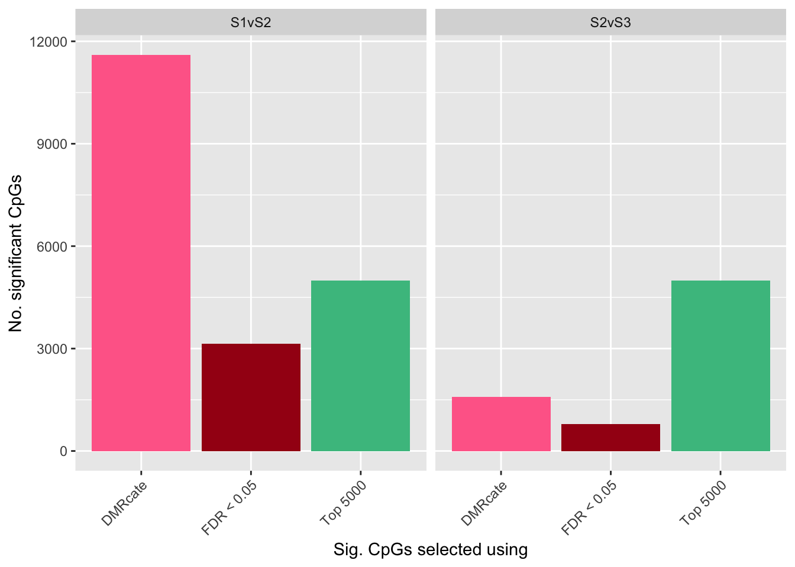
| Version | Author | Date |
|---|---|---|
| a9a3a86 | JovMaksimovic | 2021-04-06 |
flatAnn <- loadFlatAnnotation(anno)
dat %>% group_by(contrast, method) %>%
inner_join(flatAnn, by = c("cpgs" = "cpg")) %>%
group_by(contrast, method) %>%
dplyr::select(group_cols(), entrezid) %>%
distinct() %>%
tally() -> sub
ggplot(sub, aes(x = method, y = n, fill = method)) +
geom_bar(stat = "identity", show.legend = FALSE) +
facet_wrap(vars(contrast)) +
labs(y = "No. genes with sig. CpGs", x = "Sig. CpGs selected using") +
theme(axis.text.x = element_text(angle = 45, hjust = 1)) +
scale_fill_manual(values = selectCols)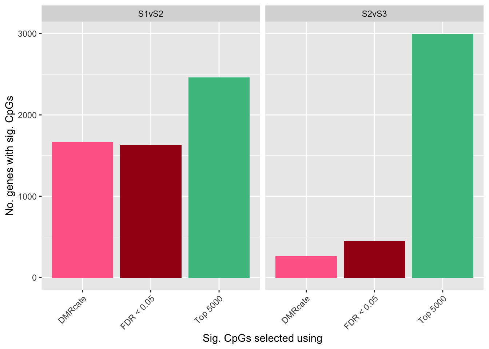
| Version | Author | Date |
|---|---|---|
| a9a3a86 | JovMaksimovic | 2021-04-06 |
dat %>% group_by(contrast, method) %>%
left_join(flatAnn, by = c("cpgs" = "cpg")) %>%
group_by(contrast, method) %>%
dplyr::select(group_cols(), entrezid, cpgs) %>%
summarise(prop = sum(!is.na(entrezid[!duplicated(cpgs)]))/
length(unique(cpgs))) -> sub`summarise()` has grouped output by 'contrast'. You can override using the `.groups` argument.p <- vector("list", length(unique(sub$contrast)))
for(i in 1:length(p)){
cont <- sort(unique(sub$contrast))[i]
p[[i]] <- ggplot(sub[sub$contrast == cont,],
aes(x = method, y = prop)) +
geom_bar(stat = "identity",
show.legend = FALSE,
fill="black") +
labs(y = "Prop. sig. CpGs mapped to genes",
x = "Sig. CpGs selected using") +
theme(axis.text.x = element_text(angle = 45, hjust = 1)) +
scale_x_discrete(limits = c("FDR < 0.05", "DMRcate", "Top 5000"))
}
p[[1]] + ggtitle(sort(unique(sub$contrast))[1]) |
p[[2]] + ggtitle(sort(unique(sub$contrast))[2])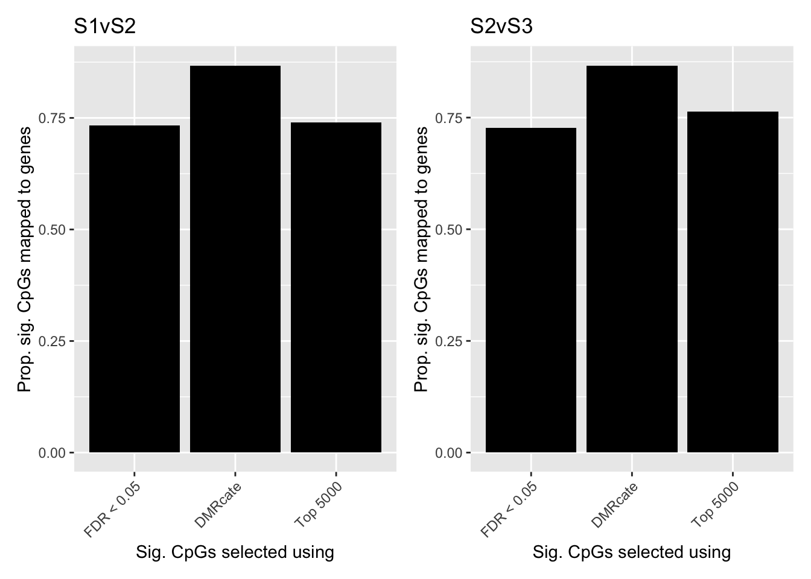
| Version | Author | Date |
|---|---|---|
| a9a3a86 | JovMaksimovic | 2021-04-06 |
Save figure for use in manuscript.
fig <- here("output/figures/Fig-5F.rds")
saveRDS(p[[1]], fig, compress = FALSE)
fig <- here("output/figures/SFig-11E.rds")
saveRDS(p[[2]], fig, compress = FALSE)dat %>% group_by(contrast, method) %>%
left_join(flatAnn, by = c("cpgs" = "cpg")) %>%
group_by(contrast, method) %>%
dplyr::select(group_cols(), group, cpgs) %>%
group_by(contrast, method, group) %>%
tally() -> sub
ggplot(sub, aes(x = group, y = n, fill = method)) +
geom_bar(stat = "identity", position = "dodge") +
facet_wrap(vars(contrast), nrow = 3, ncol = 1, scales = "free_y") +
labs(fill = "Sig. CpGs selected using", y = "No. sig. CpGs mapped to genomic features",
x = "Feature") +
theme(axis.text.x = element_text(angle = 45, hjust = 1))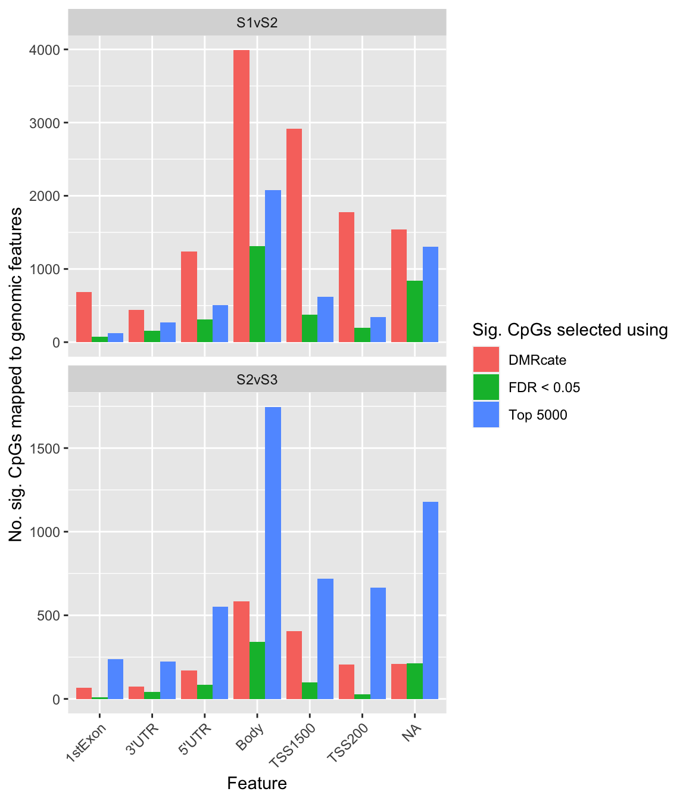
| Version | Author | Date |
|---|---|---|
| a9a3a86 | JovMaksimovic | 2021-04-06 |
CpG overlap between region-wise and probe-wise approaches
Compare the CpGs covered by the different approaches, for the three contrasts.
p <- vector("list", ncol(cont.matrix))
d <- vector("list", length(p))
for(i in 1:length(p)){
cont <- sort(colnames(cont.matrix))[i]
dat %>% dplyr::filter(contrast == cont) %>%
dplyr::select(-contrast) %>%
group_by(cpgs) %>%
summarize(meth = list(method)) %>%
ggplot(aes(x = meth)) +
geom_bar() +
labs(y = "Intersection size", x = "") +
scale_x_upset(sets = c("FDR < 0.05", "DMRcate", "Top 5000")) +
theme(axis.title.y = element_text(size = 10)) -> int
dat %>% dplyr::filter(contrast == cont) %>%
group_by(contrast, method) %>%
tally() %>%
ggplot(aes(x = method, y = n)) +
geom_col(fill="black", position = "dodge") +
geom_text(aes(label = n),
position = position_dodge(0.9),
size = 1.5, hjust = 1.1, vjust = 0.5) +
labs(y = "Set size") +
scale_x_discrete(position = "top",
limits = c("Top 5000", "DMRcate", "FDR < 0.05")) +
scale_y_reverse(labels = scales::format_format(big.mark = " ",
decimal.mark = ".",
scientific = FALSE,
digits = 0),
expand = expansion(mult = c(0.6, 0))) +
coord_flip() +
theme_minimal() +
theme(legend.position = "none",
axis.title.y = element_blank(),
axis.title.x = element_text(size = 8),
axis.text.x = element_blank(),
axis.text.y = element_blank(),
panel.grid = element_blank(),
plot.margin = margin(0, 0, 0, 0,"cm")) -> sets
p[[i]] <- ggarrange(ggarrange(plotlist = list(NULL, sets, NULL),
nrow = 3, heights = c(2.5, 1, 0.1)), int,
ncol = 2,
widths = c(1, 3.5))
d[[i]] <- ggarrange(ggarrange(plotlist = list(NULL, sets, NULL),
nrow = 3, heights = c(4.75, 1, 0.1)), int,
ncol = 2,
widths = c(1, 3.5))
}
d[[1]] 
| Version | Author | Date |
|---|---|---|
| a9a3a86 | JovMaksimovic | 2021-04-06 |
d[[2]]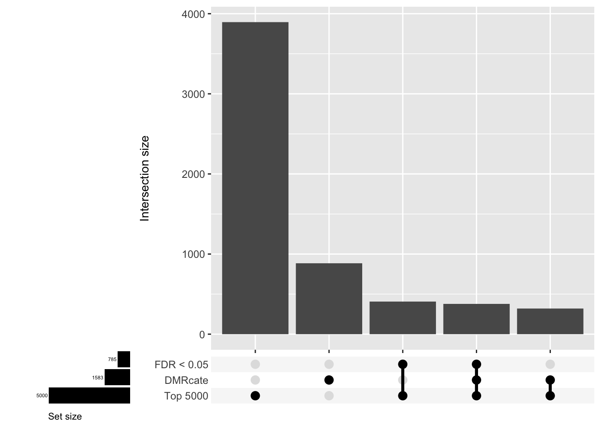
| Version | Author | Date |
|---|---|---|
| a9a3a86 | JovMaksimovic | 2021-04-06 |
Save figure for use in manuscript.
fig <- here("output/figures/Fig-5E.rds")
saveRDS(p[[1]], fig, compress = FALSE)
fig <- here("output/figures/SFig-11D.rds")
saveRDS(p[[2]], fig, compress = FALSE)Gene overlap between region-wise and probe-wise approaches
Compare the genes covered by the different approaches, for the three contrasts.
p <- vector("list", ncol(cont.matrix))
d <- vector("list", length(p))
for(i in 1:length(p)){
cont <- sort(colnames(cont.matrix))[i]
dat %>% dplyr::filter(contrast == cont) %>%
left_join(flatAnn, by = c("cpgs" = "cpg")) %>%
dplyr::select(method, entrezid) %>%
distinct() %>%
group_by(entrezid) %>%
summarize(meth = list(method)) %>%
ggplot(aes(x = meth)) +
geom_bar() +
labs(y = "Intersection size", x = "") +
scale_x_upset(sets = c("FDR < 0.05", "DMRcate", "Top 5000")) +
theme(axis.title.y = element_text(size = 10)) -> int
dat %>% group_by(contrast, method) %>%
inner_join(flatAnn, by = c("cpgs" = "cpg")) %>%
group_by(contrast, method) %>%
dplyr::select(group_cols(), entrezid) %>%
distinct() %>%
dplyr::filter(contrast == cont) %>%
tally() %>%
ggplot(aes(x = method, y = n)) +
geom_col(fill="black", position = "dodge") +
geom_text(aes(label = n),
position = position_dodge(0.9),
size = 1.5, hjust = 1.1, vjust = 0.5) +
labs(y = "Set size") +
scale_x_discrete(position = "top",
limits = c("Top 5000", "DMRcate", "FDR < 0.05")) +
scale_y_reverse(labels = scales::format_format(big.mark = " ",
decimal.mark = ".",
scientific = FALSE,
digits = 0),
expand = expansion(mult = c(0.6, 0))) +
coord_flip() +
theme_minimal() +
theme(legend.position = "none",
axis.title.y = element_blank(),
axis.title.x = element_text(size = 9),
axis.text.x = element_blank(),
axis.text.y = element_blank(),
panel.grid = element_blank(),
plot.margin = margin(0, 0, 0, 0,"cm")) -> sets
p[[i]] <- ggarrange(ggarrange(plotlist = list(NULL, sets, NULL),
nrow = 3, heights = c(2.5, 1, 0.1)), int,
ncol = 2,
widths = c(1, 3.5))
d[[i]] <- ggarrange(ggarrange(plotlist = list(NULL, sets, NULL),
nrow = 3, heights = c(4.75, 1, 0.1)), int,
ncol = 2,
widths = c(1, 3.5))
}
d[[1]]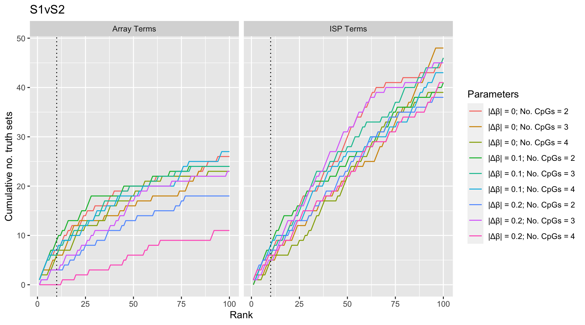
| Version | Author | Date |
|---|---|---|
| a9a3a86 | JovMaksimovic | 2021-04-06 |
d[[2]]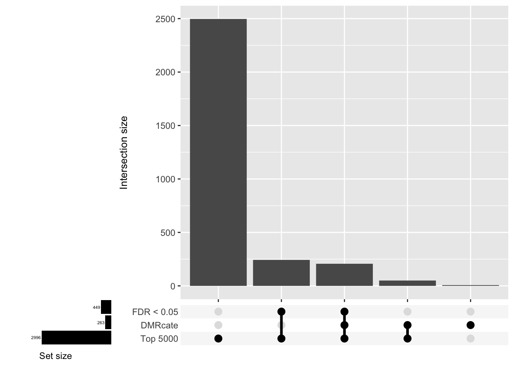
| Version | Author | Date |
|---|---|---|
| a9a3a86 | JovMaksimovic | 2021-04-06 |
Save figure for use in manuscript.
fig <- here("output/figures/Fig-5G.rds")
saveRDS(p[[1]], fig, compress = FALSE)
fig <- here("output/figures/SFig-11F.rds")
saveRDS(p[[2]], fig, compress = FALSE)Effect of DMR cut offs i.e. num probes in region and absolute delta beta
outFile <- here("data/cache-region/dmrcate-GSE45459-params.rds")
dmrParams <- NULL
meanDiffs <- seq(0, 0.2, by = 0.1)
noCpgs <- 2:4
if(!file.exists(outFile)){
for(i in 1:length(dmrList)){
for(j in meanDiffs){
for(k in noCpgs){
keep <- (abs(dmrList[[i]]$meandiff) > j &
dmrList[[i]]$no.cpgs >= k)
tmp <- topGSA(goregion(dmrList[[i]][keep, ], anno = anno,
array.type = "450k"),
number = Inf)
tmp <- rownames_to_column(tmp, var = "GO")[, c("GO", "P.DE")]
tmp$params <- glue("|\u0394\u03B2| = {j}; No. CpGs = {k}")
tmp$contrast <- colnames(cont.matrix)[i]
dmrParams <- bind_rows(dmrParams, tmp)
}
}
}
saveRDS(dmrParams, file = outFile)
} else {
dmrParams <- readRDS(outFile)
}Examine effect of changing DMR parameter cut offs on gene set rankings of GO categories in "immune system process".
dmrParams %>% arrange(contrast, params, P.DE) %>%
group_by(contrast, params) %>%
mutate(csum = cumsum(GO %in% immuneGO$GOID)) %>%
mutate(rank = 1:n()) %>%
dplyr::filter(rank <= 100) -> dat
p1 <- ggplot(dat, aes(x = rank, y = csum, colour = params)) +
geom_line() +
facet_wrap(vars(contrast), ncol=3) +
geom_vline(xintercept = 10, linetype = "dotted") +
labs(colour = "Parameters", x = "Rank", y = "Cumulative no. immune sets")
p1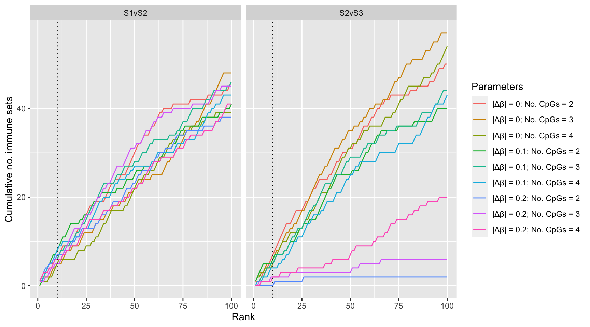
| Version | Author | Date |
|---|---|---|
| a9a3a86 | JovMaksimovic | 2021-04-06 |
Examine effect of changing DMR parameter cut offs on gene set rankings on GO categories derived from RNAseq analysis.
dmrParams %>% arrange(contrast, params, P.DE) %>%
group_by(contrast, params) %>%
mutate(csum = cumsum(GO %in% topGOSets$ID[topGOSets$contrast %in% contrast])) %>%
mutate(rank = 1:n()) %>%
dplyr::filter(rank <= 100) -> sub
p2 <- ggplot(sub, aes(x = rank, y = csum, colour = params)) +
geom_line() +
facet_wrap(vars(contrast), ncol=3) +
geom_vline(xintercept = 10, linetype = "dotted") +
labs(colour = "Parameters", x = "Rank",
y = glue("Cumulative no. RNAseq sets"))
p2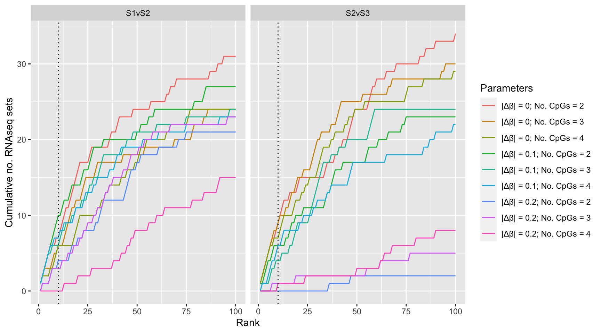
| Version | Author | Date |
|---|---|---|
| a9a3a86 | JovMaksimovic | 2021-04-06 |
Save figure for use in manuscript.
fig <- here("output/figures/SFig-14A.rds")
saveRDS(p1, fig, compress = FALSE)
fig <- here("output/figures/SFig-14B.rds")
saveRDS(p2, fig, compress = FALSE)
sessionInfo()R version 4.0.3 (2020-10-10)
Platform: x86_64-apple-darwin17.0 (64-bit)
Running under: macOS Mojave 10.14.6
Matrix products: default
BLAS: /Library/Frameworks/R.framework/Versions/4.0/Resources/lib/libRblas.dylib
LAPACK: /Library/Frameworks/R.framework/Versions/4.0/Resources/lib/libRlapack.dylib
locale:
[1] en_AU.UTF-8/en_AU.UTF-8/en_AU.UTF-8/C/en_AU.UTF-8/en_AU.UTF-8
attached base packages:
[1] grid stats4 parallel stats graphics grDevices utils
[8] datasets methods base
other attached packages:
[1] TxDb.Hsapiens.UCSC.hg19.knownGene_3.2.2
[2] GenomicFeatures_1.42.3
[3] AnnotationDbi_1.52.0
[4] ggpubr_0.4.0
[5] ggupset_0.3.0
[6] tibble_3.1.0
[7] patchwork_1.1.1
[8] dplyr_1.0.5
[9] UpSetR_1.4.0
[10] glue_1.4.2
[11] ggplot2_3.3.3
[12] missMethyl_1.24.0
[13] IlluminaHumanMethylationEPICanno.ilm10b4.hg19_0.6.0
[14] IlluminaHumanMethylation450kanno.ilmn12.hg19_0.6.0
[15] reshape2_1.4.4
[16] BiocParallel_1.24.1
[17] limma_3.46.0
[18] paletteer_1.3.0
[19] ChAMP_2.20.1
[20] RPMM_1.25
[21] cluster_2.1.1
[22] DT_0.17
[23] IlluminaHumanMethylationEPICmanifest_0.3.0
[24] Illumina450ProbeVariants.db_1.26.0
[25] DMRcate_2.4.1
[26] ChAMPdata_2.22.0
[27] minfi_1.36.0
[28] bumphunter_1.32.0
[29] locfit_1.5-9.4
[30] iterators_1.0.13
[31] foreach_1.5.1
[32] Biostrings_2.58.0
[33] XVector_0.30.0
[34] SummarizedExperiment_1.20.0
[35] Biobase_2.50.0
[36] MatrixGenerics_1.2.1
[37] matrixStats_0.58.0
[38] GenomicRanges_1.42.0
[39] GenomeInfoDb_1.26.4
[40] IRanges_2.24.1
[41] S4Vectors_0.28.1
[42] BiocGenerics_0.36.0
[43] here_1.0.1
[44] workflowr_1.6.2
loaded via a namespace (and not attached):
[1] Hmisc_4.5-0
[2] Rsamtools_2.6.0
[3] rprojroot_2.0.2
[4] crayon_1.4.1
[5] MASS_7.3-53.1
[6] rhdf5filters_1.2.0
[7] nlme_3.1-152
[8] backports_1.2.1
[9] sva_3.38.0
[10] impute_1.64.0
[11] rlang_0.4.10
[12] readxl_1.3.1
[13] DSS_2.38.0
[14] globaltest_5.44.0
[15] bit64_4.0.5
[16] isva_1.9
[17] rngtools_1.5
[18] methylumi_2.36.0
[19] haven_2.3.1
[20] tidyselect_1.1.0
[21] rio_0.5.26
[22] XML_3.99-0.6
[23] nleqslv_3.3.2
[24] tidyr_1.1.3
[25] GenomicAlignments_1.26.0
[26] xtable_1.8-4
[27] magrittr_2.0.1
[28] evaluate_0.14
[29] zlibbioc_1.36.0
[30] rstudioapi_0.13
[31] doRNG_1.8.2
[32] whisker_0.4
[33] bslib_0.2.4
[34] rpart_4.1-15
[35] ensembldb_2.14.0
[36] shiny_1.6.0
[37] xfun_0.22
[38] askpass_1.1
[39] clue_0.3-58
[40] multtest_2.46.0
[41] interactiveDisplayBase_1.28.0
[42] base64_2.0
[43] biovizBase_1.38.0
[44] scrime_1.3.5
[45] dendextend_1.14.0
[46] png_0.1-7
[47] permute_0.9-5
[48] reshape_0.8.8
[49] withr_2.4.1
[50] lumi_2.42.0
[51] bitops_1.0-6
[52] plyr_1.8.6
[53] cellranger_1.1.0
[54] AnnotationFilter_1.14.0
[55] JADE_2.0-3
[56] pillar_1.5.1
[57] cachem_1.0.4
[58] fs_1.5.0
[59] DelayedMatrixStats_1.12.3
[60] vctrs_0.3.7
[61] ellipsis_0.3.1
[62] generics_0.1.0
[63] tools_4.0.3
[64] foreign_0.8-81
[65] munsell_0.5.0
[66] DelayedArray_0.16.3
[67] fastmap_1.1.0
[68] compiler_4.0.3
[69] abind_1.4-5
[70] httpuv_1.5.5
[71] rtracklayer_1.50.0
[72] geneLenDataBase_1.26.0
[73] ExperimentHub_1.16.0
[74] lemon_0.4.5
[75] beanplot_1.2
[76] Gviz_1.34.1
[77] plotly_4.9.3
[78] GenomeInfoDbData_1.2.4
[79] gridExtra_2.3
[80] DNAcopy_1.64.0
[81] edgeR_3.32.1
[82] lattice_0.20-41
[83] utf8_1.2.1
[84] later_1.1.0.1
[85] BiocFileCache_1.14.0
[86] jsonlite_1.7.2
[87] affy_1.68.0
[88] scales_1.1.1
[89] carData_3.0-4
[90] sparseMatrixStats_1.2.1
[91] genefilter_1.72.1
[92] lazyeval_0.2.2
[93] promises_1.2.0.1
[94] car_3.0-10
[95] doParallel_1.0.16
[96] latticeExtra_0.6-29
[97] R.utils_2.10.1
[98] goseq_1.42.0
[99] checkmate_2.0.0
[100] rmarkdown_2.7
[101] openxlsx_4.2.3
[102] nor1mix_1.3-0
[103] cowplot_1.1.1
[104] statmod_1.4.35
[105] siggenes_1.64.0
[106] forcats_0.5.1
[107] dichromat_2.0-0
[108] BSgenome_1.58.0
[109] HDF5Array_1.18.1
[110] bsseq_1.26.0
[111] survival_3.2-10
[112] yaml_2.2.1
[113] htmltools_0.5.1.1
[114] memoise_2.0.0
[115] VariantAnnotation_1.36.0
[116] quadprog_1.5-8
[117] viridisLite_0.3.0
[118] digest_0.6.27
[119] assertthat_0.2.1
[120] mime_0.10
[121] rappdirs_0.3.3
[122] BiasedUrn_1.07
[123] RSQLite_2.2.5
[124] data.table_1.14.0
[125] blob_1.2.1
[126] R.oo_1.24.0
[127] preprocessCore_1.52.1
[128] fastICA_1.2-2
[129] shinythemes_1.2.0
[130] splines_4.0.3
[131] Formula_1.2-4
[132] labeling_0.4.2
[133] rematch2_2.1.2
[134] Rhdf5lib_1.12.1
[135] illuminaio_0.32.0
[136] AnnotationHub_2.22.0
[137] ProtGenerics_1.22.0
[138] RCurl_1.98-1.3
[139] broom_0.7.6
[140] hms_1.0.0
[141] rhdf5_2.34.0
[142] colorspace_2.0-0
[143] base64enc_0.1-3
[144] BiocManager_1.30.12
[145] nnet_7.3-15
[146] sass_0.3.1
[147] GEOquery_2.58.0
[148] Rcpp_1.0.6
[149] mclust_5.4.7
[150] fansi_0.4.2
[151] R6_2.5.0
[152] lifecycle_1.0.0
[153] zip_2.1.1
[154] curl_4.3
[155] kpmt_0.1.0
[156] ggsignif_0.6.1
[157] affyio_1.60.0
[158] jquerylib_0.1.3
[159] Matrix_1.3-2
[160] qvalue_2.22.0
[161] ROC_1.66.0
[162] org.Hs.eg.db_3.12.0
[163] RColorBrewer_1.1-2
[164] stringr_1.4.0
[165] IlluminaHumanMethylation450kmanifest_0.4.0
[166] htmlwidgets_1.5.3
[167] biomaRt_2.46.3
[168] purrr_0.3.4
[169] marray_1.68.0
[170] mgcv_1.8-34
[171] openssl_1.4.3
[172] htmlTable_2.1.0
[173] codetools_0.2-18
[174] GO.db_3.12.1
[175] gtools_3.8.2
[176] prettyunits_1.1.1
[177] dbplyr_2.1.0
[178] R.methodsS3_1.8.1
[179] gtable_0.3.0
[180] DBI_1.1.1
[181] git2r_0.28.0
[182] wateRmelon_1.34.0
[183] httr_1.4.2
[184] highr_0.8
[185] KernSmooth_2.23-18
[186] stringi_1.5.3
[187] progress_1.2.2
[188] farver_2.1.0
[189] annotate_1.68.0
[190] viridis_0.5.1
[191] xml2_1.3.2
[192] combinat_0.0-8
[193] readr_1.4.0
[194] BiocVersion_3.12.0
[195] bit_4.0.4
[196] jpeg_0.1-8.1
[197] pkgconfig_2.0.3
[198] rstatix_0.7.0
[199] knitr_1.31